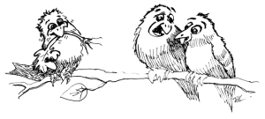

As the saying goes...

The mature rice plant bows its head
実るほど頭を垂れる稲穂かな
みのるほどこうべをたれるいなほかな
Don’t know anything about the sixth day
六日知らず
むいかしらず
To endure the unbearable is true endurance
成らぬ堪忍するが堪忍
ならぬかんにんするがかんにん
Compassion is not for the benefit of others
情けは人の為ならず
なさけはひとのためならず
In the leftovers, there is good fortune
残り物には福がある
のこりものにはふくがある
A ship that is underway
乗り掛かった船
のりかかったふね
A pepper is small but hot
山椒は小粒でもぴりりと辛い
さんしょはこつぶでもぴりりとからい
To hit the general, first shoot the horse
将を射んとせば先ず馬を射よ
しょうをいんとせばまずうまをいよ
Tai mo hitori wa umakarazu
鯛も一人はうまからず
たいもひとりはうまからず
Check back for new additions in the future!
| © 1995-2013 NACOS International Institute. All Rights Reserved. |